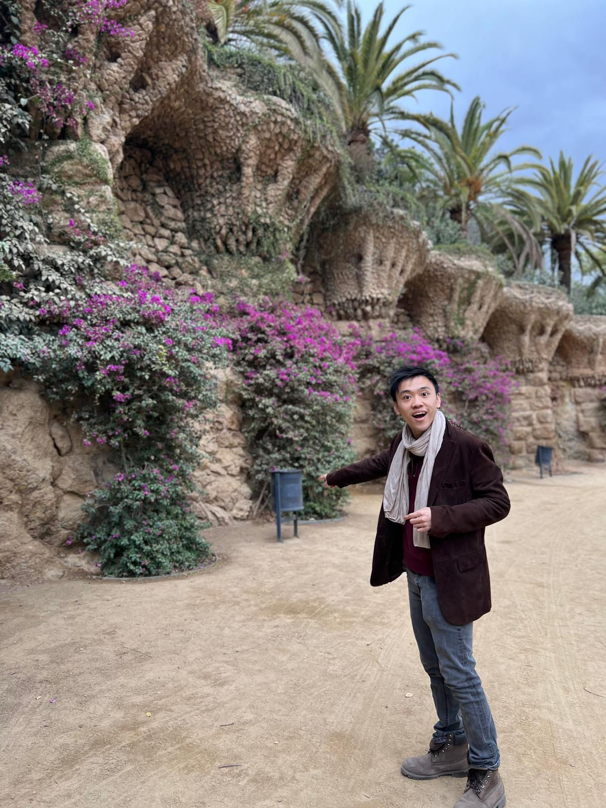

Price Parity under Imperfect Recommendation Alignment
Work in progress, September 2026.

Economics · University College London
Parco Pak-Wing Wong
PhD Candidate in Economics
I am a PhD Candidate in Economics at University College London, supervised by Professor Rani Spiegler and Professor Philippe Jehiel. My research interests are in microeconomic theory, behavioral industrial organization, and consumer learning.
I work on questions in microeconomic theory and behavioural economics, with particular interest in how imperfect models, learning, and information shape economic behaviour.
I am based in the Department of Economics at University College London. My current work studies consumer misspecification, recommendation systems and price parity, and human-capital formation.
Work in progress, September 2026.
Working paper, August 2026.
Working paper, August 2026.
Email uctppww@ucl.ac.uk
Institution University College London